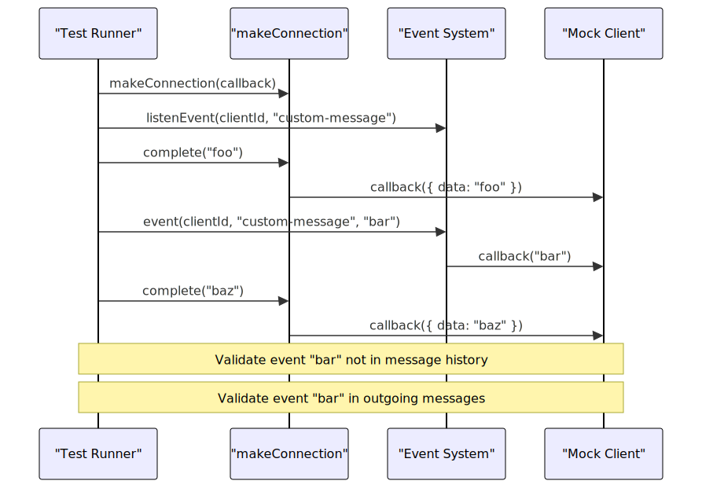

This page documents the testing infrastructure and utilities available in agent-swarm-kit for validating agent behavior, system integration, and concurrent operations. The test suite provides comprehensive coverage of the framework's core functionality including agent orchestration, session management, navigation, and resource cleanup.
For information about integration testing patterns, see Integration Tests. For information about building multi-agent systems in production, see Building Multi-Agent Systems.
The testing system is built on worker-testbed and provides utilities for creating mock agents, completions, and swarms to validate system behavior under various conditions.

The framework provides several categories of utilities for comprehensive testing of agent systems.
| Function | Purpose | Usage Pattern |
|---|---|---|
session() |
Creates persistent session with automatic cleanup | const { complete } = session(clientId, swarm) |
makeConnection() |
Creates connection with callback for outgoing messages | const complete = makeConnection(callback, clientId, swarm) |
disposeConnection() |
Manually dispose session resources | await disposeConnection(clientId, swarm) |
| Function | Purpose | Usage Pattern |
|---|---|---|
complete() |
Execute message through default agent flow | await complete(message, clientId, swarm) |
execute() |
Execute message through specific agent | await execute(message, clientId, agentName) |
getRawHistory() |
Retrieve complete message history | const history = await getRawHistory(clientId) |
| Function | Purpose | Usage Pattern |
|---|---|---|
changeToAgent() |
Switch active agent in session | await changeToAgent(agentName, clientId) |
changeToDefaultAgent() |
Reset to swarm's default agent | await changeToDefaultAgent(clientId) |
changeToPrevAgent() |
Navigate to previous agent | await changeToPrevAgent(clientId) |
getAgentName() |
Get current active agent | const agent = await getAgentName(clientId) |
The test suite uses predictable mock completions for controlled testing scenarios:

Test agents are configured with specific behaviors for different testing scenarios:
| Agent Type | Completion | Tools | Purpose |
|---|---|---|---|
| Increment Agent | Mock increment completion | None | Concurrency testing |
| Triage Agent | Navigation completion | Navigation tools | Routing testing |
| Sales Agent | Echo completion | Navigation tools | Target agent |
| Refund Agent | Echo completion | Navigation tools | Target agent |
The test suite includes comprehensive concurrency testing to validate queue management and resource isolation:

The framework provides utilities for testing the event system and real-time communication:
| Function | Purpose | Usage Pattern |
|---|---|---|
event() |
Emit custom event to client | await event(clientId, "custom-message", data) |
listenEvent() |
Register event listener | listenEvent(clientId, "event-name", callback) |
emit() |
Legacy emit function | await emit(clientId, data) |

The test suite validates proper cleanup of system resources:

| Configuration | Purpose | Test Usage |
|---|---|---|
CC_PERSIST_ENABLED_BY_DEFAULT |
Control message persistence | Set to false for isolated tests |
CC_RESQUE_STRATEGY |
Error recovery strategy | Set to "flush" for rescue testing |
CC_EMPTY_OUTPUT_PLACEHOLDERS |
Empty response handling | Set to ["Resque"] for placeholder testing |

The validation system ensures all component dependencies are properly configured:
| Test Scenario | Missing Component | Expected Result |
|---|---|---|
| Complete Setup | None | Pass validation |
| Missing Swarm | Swarm definition | Fail with error |
| Missing Completion | Completion handler | Fail with error |
| Missing Agent | Agent definition | Fail with error |
| Missing Tool | Tool implementation | Fail with error |
| Invalid Default Agent | Agent not in swarm list | Fail with error |
